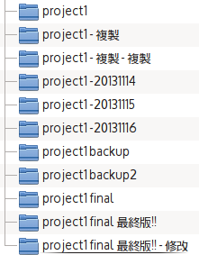

程式碼的時光機
版本控制（使用 git）
Intro
- 賴韋辰（lRabbit 兔子）
- Mozilla Taiwan Community / MozTW
- Ubuntu-TW Community
- Foxconn 助理工程師
- 高大資管 103
- Mozilla Thunderbird 正體中文在地化
- COSCUP 2010 主持助理
- COSCUP 2011 行銷組
- COSCUP 2013 行銷公關組
- K-Meleon 非官方正體中文計劃
- 第 11 屆資訊管理學系系學會 資訊部 副部長
- 103 級 212 管理員
- 屏東高中 資訊研習社 活動
最原始的版本控制
寫程式的過程都是經過一改再改
常常很多時候都會不小心把程式給改爛
偏偏程式碼一多會連自己到底改了什麼東西都不知道……


還會忘記自己在哪一版改了什麼……
◢▆▅▄▃╰(〒皿〒)╯▃▄▅▆◣
崩 潰
多人合作的時候

俗話說（？）
懶
是一種美德
你需要的是
版本控制系統
GIT
The Stupid Content Tracker
大家都在用 git !
- Linux kernel
- Android
- Debian
- PHP
- Fedora
- GTK+
- Qt
- Perl
- jQuery
- Ruby on Rails
- Drupal
- PostgreSQL
- ... and more ...
為何要用版本控制？
- 記錄程式的開發過程
- 不怕程式改壞！
- 簡單的備份方案
- 多人合作不怕衝突
- 誰在何時做什麼修改一清二楚！
不用再用檔名說故事！
DEMO!
基本指令
- init - 建立新的 repository
- clone - 複製別人的 repository
設定 Git
git config --global user.name "lRabbit" git config --global user.email "abev66@gmail.com"
基本指令
- status - 查看狀態
- log - 查看修改記錄
- diff - 查看修改差異
- show - 查看特定版本
建立新修改
- add - 加入新檔案
- commit - 記錄修改
版本修改越小越好！
.gitignore
不需要納入版本控制的檔案
- 暫存檔
- 記錄檔
- 程式資料
- 程式本身以外的檔案
時光機
- checkout - 切換到特定版本／還原特定檔案
- revert - 撤銷特定修改
- reset - 回溯或重新設定版本位置到特定版本
Branch（分支）
- branch - 建立新分支
- merge - 整合不同分支
在 repostories 之間
- fetch - 把別人的東西抓下來
- push - 把自己的東西推出去
- pull - 把別人的東西拉進來並整合 ( = fetch + merge )
- remote - 遠端相關操作
其他
- cherry-pick - 提取特定版本
- blame - 檢查每行程式源自於哪一個版本
- ...and more...
注意事項
- 保持版本間的修改越小越好
- 保持 master 是可以運作的版本
- 避免使用二進位檔
多人協作（git server）
自己架！
gitolite、gitosis


git、Mercurial
git on Windows
- msysgit
- tortoisegit
- ...
延伸閱讀(?)
寫程式？那些老師沒教的事 by CrBoy
取得這份簡報
On abev66 @ github
Thanks!
By Lai, Wei-Chen, 2013/12/12 @ National University of Kaohsiung Department of Information Management